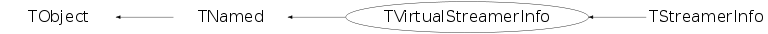

class TVirtualStreamerInfo: public TNamed
TVirtualStreamerInfo Abstract Interface class Abstract Interface describing Streamer information for one class.
Function Members (Methods)
This is an abstract class, constructors will not be documented.
Look at the header to check for available constructors.
public:
| virtual | ~TVirtualStreamerInfo() |
| void | TObject::AbstractMethod(const char* method) const |
| virtual void | TObject::AppendPad(Option_t* option = "") |
| virtual void | TObject::Browse(TBrowser* b) |
| virtual void | Build() |
| virtual void | BuildCheck() |
| virtual void | BuildEmulated(TFile* file) |
| virtual Bool_t | BuildFor(const TClass* cl) |
| virtual void | BuildOld() |
| virtual void | CallShowMembers(void* obj, TMemberInspector& insp) const |
| static Bool_t | CanDelete() |
| static Bool_t | CanOptimize() |
| static TClass* | Class() |
| virtual const char* | TObject::ClassName() const |
| virtual void | Clear(Option_t*) |
| virtual TObject* | TNamed::Clone(const char* newname = "") const |
| virtual Int_t | TNamed::Compare(const TObject* obj) const |
| virtual Bool_t | CompareContent(TClass* cl, TVirtualStreamerInfo* info, Bool_t warn, Bool_t complete) |
| virtual void | Compile() |
| virtual void | TNamed::Copy(TObject& named) const |
| virtual void | TObject::Delete(Option_t* option = "")MENU |
| virtual void | DeleteArray(void* p, Bool_t dtorOnly = kFALSE) |
| virtual void | Destructor(void* p, Bool_t dtorOnly = kFALSE) |
| virtual Int_t | TObject::DistancetoPrimitive(Int_t px, Int_t py) |
| virtual void | TObject::Draw(Option_t* option = "") |
| virtual void | TObject::DrawClass() constMENU |
| virtual TObject* | TObject::DrawClone(Option_t* option = "") constMENU |
| virtual void | TObject::Dump() constMENU |
| virtual void | TObject::Error(const char* method, const char* msgfmt) const |
| virtual void | TObject::Execute(const char* method, const char* params, Int_t* error = 0) |
| virtual void | TObject::Execute(TMethod* method, TObjArray* params, Int_t* error = 0) |
| virtual void | TObject::ExecuteEvent(Int_t event, Int_t px, Int_t py) |
| static TVirtualStreamerInfo* | Factory() |
| virtual void | TObject::Fatal(const char* method, const char* msgfmt) const |
| virtual void | TNamed::FillBuffer(char*& buffer) |
| virtual TObject* | TObject::FindObject(const char* name) const |
| virtual TObject* | TObject::FindObject(const TObject* obj) const |
| virtual void | ForceWriteInfo(TFile* file, Bool_t force = kFALSE) |
| virtual TClassStreamer* | GenEmulatedClassStreamer(const char* class_name, Bool_t silent) |
| virtual TVirtualCollectionProxy* | GenEmulatedProxy(const char* class_name, Bool_t silent) |
| virtual Int_t | GenerateHeaderFile(const char* dirname, const TList* subClasses = 0, const TList* extrainfos = 0) |
| virtual TClassStreamer* | GenExplicitClassStreamer(const ROOT::TCollectionProxyInfo& info, TClass* cl) |
| virtual TVirtualCollectionProxy* | GenExplicitProxy(const ROOT::TCollectionProxyInfo& info, TClass* cl) |
| virtual TClass* | GetActualClass(const void* obj) const |
| virtual UInt_t | GetCheckSum() const |
| virtual TClass* | GetClass() const |
| virtual Int_t | GetClassVersion() const |
| virtual Option_t* | TObject::GetDrawOption() const |
| static Long_t | TObject::GetDtorOnly() |
| static TStreamerBasicType* | GetElementCounter(const char* countName, TClass* cl) |
| virtual TObjArray* | GetElements() const |
| virtual ULong_t* | GetElems() const |
| virtual const char* | TObject::GetIconName() const |
| virtual const char* | TNamed::GetName() const |
| virtual Int_t | GetNumber() const |
| virtual char* | TObject::GetObjectInfo(Int_t px, Int_t py) const |
| static Bool_t | TObject::GetObjectStat() |
| virtual Int_t | GetOffset(const char*) const |
| virtual Int_t* | GetOffsets() const |
| virtual Version_t | GetOldVersion() const |
| virtual Int_t | GetOnFileClassVersion() const |
| virtual Option_t* | TObject::GetOption() const |
| virtual Int_t | GetSize() const |
| virtual TStreamerElement* | GetStreamerElement(const char* datamember, Int_t& offset) const |
| static Bool_t | GetStreamMemberWise() |
| virtual const char* | TNamed::GetTitle() const |
| virtual UInt_t | TObject::GetUniqueID() const |
| virtual Bool_t | TObject::HandleTimer(TTimer* timer) |
| virtual ULong_t | TNamed::Hash() const |
| virtual void | TObject::Info(const char* method, const char* msgfmt) const |
| virtual Bool_t | TObject::InheritsFrom(const char* classname) const |
| virtual Bool_t | TObject::InheritsFrom(const TClass* cl) const |
| virtual void | TObject::Inspect() constMENU |
| void | TObject::InvertBit(UInt_t f) |
| virtual TClass* | IsA() const |
| Bool_t | IsBuilt() const |
| Bool_t | IsCompiled() const |
| virtual Bool_t | TObject::IsEqual(const TObject* obj) const |
| virtual Bool_t | TObject::IsFolder() const |
| Bool_t | TObject::IsOnHeap() const |
| Bool_t | IsOptimized() const |
| Int_t | IsRecovered() const |
| virtual Bool_t | TNamed::IsSortable() const |
| Bool_t | TObject::IsZombie() const |
| virtual void | ls(Option_t* option = "") const |
| void | TObject::MayNotUse(const char* method) const |
| virtual void* | New(void* obj = 0) |
| virtual void* | NewArray(Long_t nElements, void* ary = 0) |
| virtual TVirtualStreamerInfo* | NewInfo(TClass* cl) |
| virtual Bool_t | TObject::Notify() |
| void | TObject::Obsolete(const char* method, const char* asOfVers, const char* removedFromVers) const |
| static void | TObject::operator delete(void* ptr) |
| static void | TObject::operator delete(void* ptr, void* vp) |
| static void | TObject::operator delete[](void* ptr) |
| static void | TObject::operator delete[](void* ptr, void* vp) |
| void* | TObject::operator new(size_t sz) |
| void* | TObject::operator new(size_t sz, void* vp) |
| void* | TObject::operator new[](size_t sz) |
| void* | TObject::operator new[](size_t sz, void* vp) |
| static void | Optimize(Bool_t opt = kTRUE) |
| virtual void | TObject::Paint(Option_t* option = "") |
| virtual void | TObject::Pop() |
| virtual void | TNamed::Print(Option_t* option = "") const |
| virtual Int_t | TObject::Read(const char* name) |
| virtual void | TObject::RecursiveRemove(TObject* obj) |
| void | TObject::ResetBit(UInt_t f) |
| virtual void | TObject::SaveAs(const char* filename = "", Option_t* option = "") constMENU |
| virtual void | TObject::SavePrimitive(ostream& out, Option_t* option = "") |
| void | TObject::SetBit(UInt_t f) |
| void | TObject::SetBit(UInt_t f, Bool_t set) |
| static void | SetCanDelete(Bool_t opt = kTRUE) |
| virtual void | SetCheckSum(UInt_t checksum) |
| virtual void | SetClass(TClass* cl) |
| virtual void | SetClassVersion(Int_t vers) |
| virtual void | TObject::SetDrawOption(Option_t* option = "")MENU |
| static void | TObject::SetDtorOnly(void* obj) |
| static void | SetFactory(TVirtualStreamerInfo* factory) |
| virtual void | TNamed::SetName(const char* name)MENU |
| virtual void | TNamed::SetNameTitle(const char* name, const char* title) |
| static void | TObject::SetObjectStat(Bool_t stat) |
| static Bool_t | SetStreamMemberWise(Bool_t enable = kTRUE) |
| virtual void | TNamed::SetTitle(const char* title = "")MENU |
| virtual void | TObject::SetUniqueID(UInt_t uid) |
| virtual void | ShowMembers(TMemberInspector& insp) |
| virtual Int_t | TNamed::Sizeof() const |
| virtual void | Streamer(TBuffer& b) |
| void | StreamerNVirtual(TBuffer& b) |
| virtual void | TObject::SysError(const char* method, const char* msgfmt) const |
| virtual void | TagFile(TFile* fFile) |
| Bool_t | TObject::TestBit(UInt_t f) const |
| Int_t | TObject::TestBits(UInt_t f) const |
| virtual void | Update(const TClass* oldClass, TClass* newClass) |
| virtual void | TObject::UseCurrentStyle() |
| virtual void | TObject::Warning(const char* method, const char* msgfmt) const |
| virtual Int_t | TObject::Write(const char* name = 0, Int_t option = 0, Int_t bufsize = 0) |
| virtual Int_t | TObject::Write(const char* name = 0, Int_t option = 0, Int_t bufsize = 0) const |
protected:
| virtual void | TObject::DoError(int level, const char* location, const char* fmt, va_list va) const |
| void | TObject::MakeZombie() |
| TVirtualStreamerInfo& | operator=(const TVirtualStreamerInfo&) |
Data Members
public:
| enum { | kCannotOptimize | |
| kIgnoreTObjectStreamer | ||
| kRecovered | ||
| kNeedCheck | ||
| kIsCompiled | ||
| }; | ||
| enum EReadWrite { | kBase | |
| kOffsetL | ||
| kOffsetP | ||
| kCounter | ||
| kCharStar | ||
| kChar | ||
| kShort | ||
| kInt | ||
| kLong | ||
| kFloat | ||
| kDouble | ||
| kDouble32 | ||
| kUChar | ||
| kUShort | ||
| kUInt | ||
| kULong | ||
| kBits | ||
| kLong64 | ||
| kULong64 | ||
| kBool | ||
| kFloat16 | ||
| kObject | ||
| kAny | ||
| kObjectp | ||
| kObjectP | ||
| kTString | ||
| kTObject | ||
| kTNamed | ||
| kAnyp | ||
| kAnyP | ||
| kAnyPnoVT | ||
| kSTLp | ||
| kSkip | ||
| kSkipL | ||
| kSkipP | ||
| kConv | ||
| kConvL | ||
| kConvP | ||
| kSTL | ||
| kSTLstring | ||
| kStreamer | ||
| kStreamLoop | ||
| kCache | ||
| kArtificial | ||
| kCacheNew | ||
| kCacheDelete | ||
| kMissing | ||
| }; | ||
| enum TObject::EStatusBits { | kCanDelete | |
| kMustCleanup | ||
| kObjInCanvas | ||
| kIsReferenced | ||
| kHasUUID | ||
| kCannotPick | ||
| kNoContextMenu | ||
| kInvalidObject | ||
| }; | ||
| enum TObject::[unnamed] { | kIsOnHeap | |
| kNotDeleted | ||
| kZombie | ||
| kBitMask | ||
| kSingleKey | ||
| kOverwrite | ||
| kWriteDelete | ||
| }; |
protected:
| Bool_t | fIsBuilt | ! true if the StreamerInfo has been 'built' |
| TString | TNamed::fName | object identifier |
| Bool_t | fOptimized | ! true if the Streamer has been optimized |
| TString | TNamed::fTitle | object title |
| static Bool_t | fgCanDelete | True if ReadBuffer can delete object |
| static TVirtualStreamerInfo* | fgInfoFactory | |
| static Bool_t | fgOptimize | True if optimization on |
| static Bool_t | fgStreamMemberWise | True if the collections are to be stream "member-wise" (when possible). |
Class Charts
{kind=link}
{kind=link}
{kind=link}
{kind=link}

Function documentation
TStreamerBasicType * GetElementCounter(const char* countName, TClass* cl)
Get pointer to a TStreamerBasicType in TClass *cl static function
Bool_t GetStreamMemberWise()
Return whether the TStreamerInfos will save the collections in "member-wise" order whenever possible. The default is to store member-wise. kTRUE indicates member-wise storing kFALSE inddicates object-wise storing A collection can be saved member wise when it contain is guaranteed to be homogeneous. For example std::vector<THit> can be stored member wise, while std::vector<THit*> can not (possible use of polymorphism).
void Optimize(Bool_t opt = kTRUE)
This is a static function. Set optimization option. When this option is activated (default), consecutive data members of the same type are merged into an array (faster). Optimization must be off in TTree split mode.
TVirtualStreamerInfo * Factory()
Static function returning a pointer to a new TVirtualStreamerInfo object. If the Info factory does not exist, it is created via the plugin manager. In reality the factory is an empty TStreamerInfo object.
void SetCanDelete(Bool_t opt = kTRUE)
This is a static function. Set object delete option. When this option is activated (default), ReadBuffer automatically delete objects when a data member is a pointer to an object. If your constructor is not presetting pointers to 0, you must call this static function TStreamerInfo::SetCanDelete(kFALSE);
Bool_t SetStreamMemberWise(Bool_t enable = kTRUE)
Set whether the TStreamerInfos will save the collections in "member-wise" order whenever possible. The default is to store member-wise. kTRUE indicates member-wise storing kFALSE inddicates object-wise storing This function returns the previous value of fgStreamMemberWise.
void Build()
void BuildCheck()
void BuildEmulated(TFile* file)
void BuildOld()
void CallShowMembers(void* obj, TMemberInspector& insp) const
Bool_t CompareContent(TClass* cl, TVirtualStreamerInfo* info, Bool_t warn, Bool_t complete)
void Compile()
void ForceWriteInfo(TFile* file, Bool_t force = kFALSE)
Int_t GenerateHeaderFile(const char* dirname, const TList* subClasses = 0, const TList* extrainfos = 0)
TClass * GetActualClass(const void* obj) const
UInt_t GetCheckSum() const
Int_t GetClassVersion() const
TObjArray * GetElements() const
Int_t * GetOffsets() const
Version_t GetOldVersion() const
Int_t GetOnFileClassVersion() const
TStreamerElement * GetStreamerElement(const char* datamember, Int_t& offset) const
TVirtualStreamerInfo * NewInfo(TClass* cl)
void * New(void* obj = 0)
void Destructor(void* p, Bool_t dtorOnly = kFALSE)
void DeleteArray(void* p, Bool_t dtorOnly = kFALSE)
void SetCheckSum(UInt_t checksum)
void SetClassVersion(Int_t vers)
TVirtualCollectionProxy * GenEmulatedProxy(const char* class_name, Bool_t silent)
TClassStreamer * GenEmulatedClassStreamer(const char* class_name, Bool_t silent)
TVirtualCollectionProxy * GenExplicitProxy(const ROOT::TCollectionProxyInfo& info, TClass* cl)
TClassStreamer * GenExplicitClassStreamer(const ROOT::TCollectionProxyInfo& info, TClass* cl)